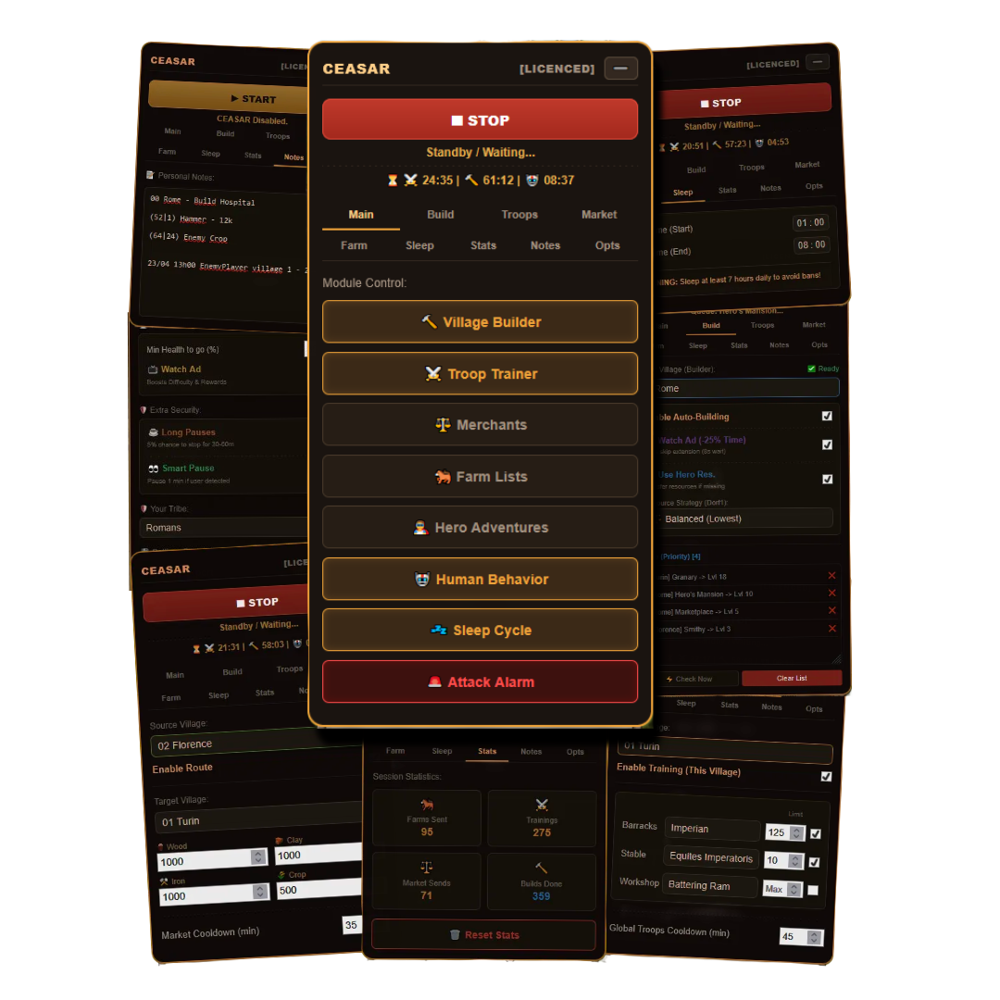

Your empire shouldn't ruin your adult life. Sleep well, perform at work, and let your personal assistant handle the repetitive grinds of Travian.
InstallTry it free. No credit card required.
See CEASAR seamlessly integrated into your game. No external software, no shady downloads. Everything runs securely within your browser.

Built specifically for Top 10 players who also have a life. CEASAR automates the exhausting tasks using state of the art algorithms, keeping your account safe while you focus on what really matters.
Sends farmlists with dynamic delays. It adjusts frequencies to maximize your hourly loot.
Queue infinite buildings and resource fields. CEASAR patiently waits for the exact required resources or user Hero resources to build instantly.
Your Barracks and Stables will never stop. Set a target amount, and the assistant ensures your training queues are always full.
Automatically redistributes resources between your villages. Prevent warehouse overflows and feed your capital city with zero manual effort.
Sends your hero to adventures as soon as they spawn.
The script runs safely on your browser. Just follow the steps below.
You need the official Tampermonkey extension installed on your browser to load CEASAR. Firefox browser recommended.
Download TampermonkeyOnce Tampermonkey is installed, click the button below and confirm the installation.
Install CEASAR Script